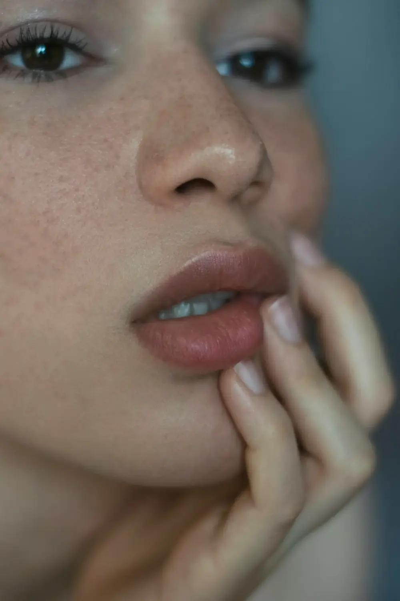
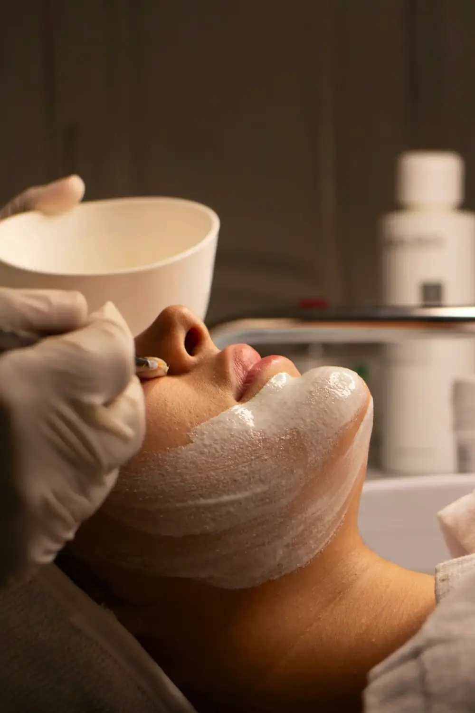
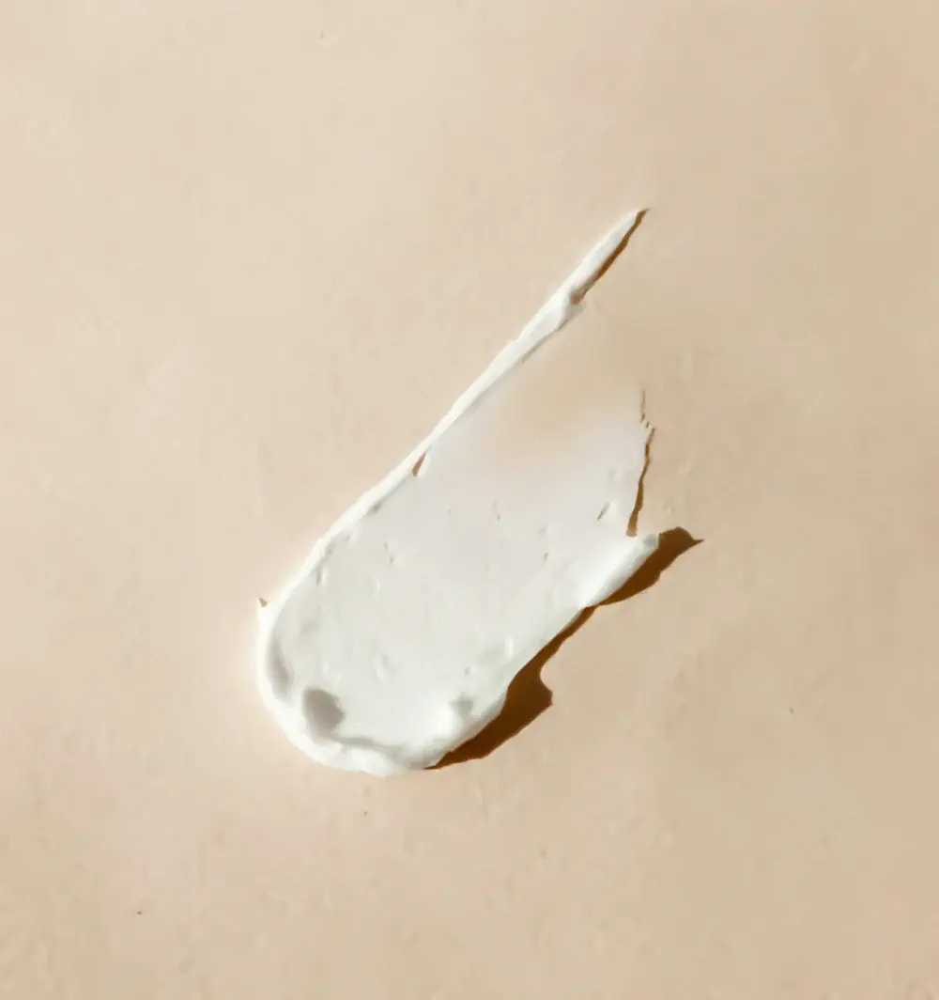
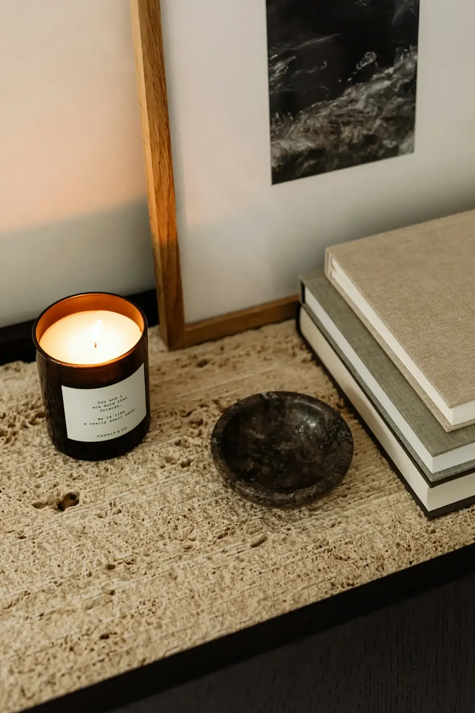

Cuiabá
Uma carta para começar
Com cuidado,
Aura
Estética integrada · Cuiabá
Para quem quer cuidar da pele, do rosto e do corpo sem exageros. Primeiro a Aura escuta e avalia; depois, só se fizer sentido, indica um caminho.
A casa
Nem todo rosto precisa ter o mesmo contorno. Nem toda pele precisa parecer filtrada. Nem todo sinal precisa desaparecer.
A Aura nasceu para que cada pessoa entenda suas possibilidades antes de decidir. Sem protocolos automáticos, sem exageros e sem a ideia de que todo mundo precisa corrigir alguma coisa. Nosso objetivo não é criar outra versão de você. É cuidar da que já existe.
Os quatro tempos
O que incomoda? O que você quer preservar? Como quer se sentir diante do espelho? A primeira conversa é sua, e acontece sem pressa.

Observamos pele, rosto ou corpo com atenção ao que você trouxe. Explicamos o que vemos, as diferenças entre os caminhos e o que não faz sentido para você.
Quando indicado, montamos um plano individual. Você leva tempo para pensar, e cada sessão acontece no ritmo que o seu corpo pede.

O cuidado não termina na sessão. Acompanhamos os resultados, ajustamos o que for preciso e respeitamos o tempo de cada pele.
A consulta
Você não precisa saber o nome de nenhum procedimento. Responda com calma e receba uma carta com o seu ponto de partida, pronta para enviar à Aura.
Cuiabá
Com cuidado,
Aura
Já sabe qual procedimento quer? Pergunte direto pelo WhatsApp.
Rituais Aura
Cada ritual é ajustado depois da avaliação. Frequência, combinação e intensidade dependem de você, não de um pacote fechado.

Textura, viço e uniformidade, com uma rotina possível entre as sessões.
Perguntar sobre Aura PeleHidratação e aparência descansada, preservando as suas características.
Perguntar sobre Aura FreshTextura e firmeza corporal, com um plano definido a partir da avaliação.
Perguntar sobre Aura Contorno
Uma experiência longa de cuidado e bem-estar, para desacelerar de verdade.
Perguntar sobre Aura ResetDúvidas
Não. A avaliação existe justamente para ajudar a entender quais possibilidades fazem sentido para você.
Sim. Fazer a avaliação não significa realizar um procedimento naquele dia.
Não. Indicação, frequência e combinação de cuidados dependem das características e dos objetivos de cada pessoa.
Sim. Pelo WhatsApp você explica o que gostaria de cuidar e tira dúvidas antes de decidir.
Talvez você não precise decidir agora
A avaliação não obriga a nenhum procedimento. Você decide depois, com calma.